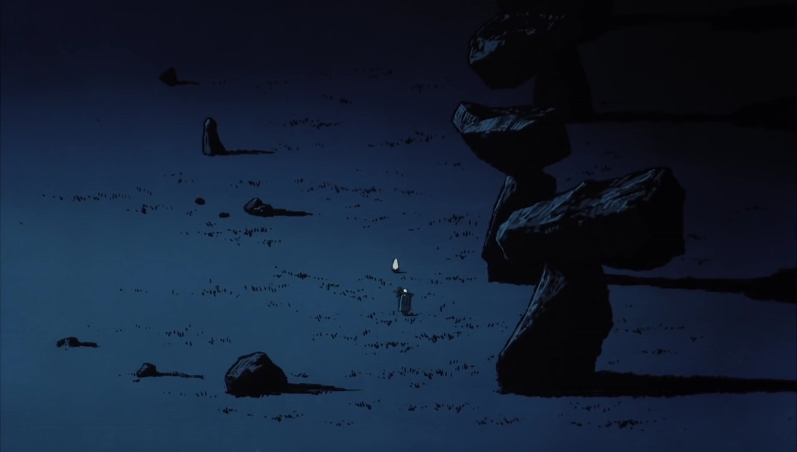

Film Overview
Angel’s Egg (1985) is a surreal, atmospheric animated film directed by Mamoru Oshii with character and concept designs by Yoshitaka Amano. Sparse in dialogue but rich in symbolism, the film uses visual storytelling to explore themes of faith, memory, innocence, rebirth, and existential longing.
Set in a desolate, dreamlike world, the story follows a mysterious young girl who protects a large egg she carries everywhere, believing something sacred rests inside it. She encounters an enigmatic boy who questions her beliefs, prompting a quiet but profound journey through empty ruins, fossilized remains, and shifting spiritual landscapes.
Rather than offering clear answers, Angel’s Egg invites interpretation. Its abstract narrative and haunting imagery have led many viewers to see it as an allegory about lost faith, spiritual trauma, or the fragmentary nature of memory. Others read it as a personal reflection of Oshii's own struggle with religion following his departure from Christianity.
Through its painterly visuals, slow pacing, and deeply symbolic compositions, the film continues to captivate audiences decades after its release — inspiring artists, musicians, filmmakers, and fans of surrealist storytelling around the world.